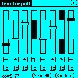
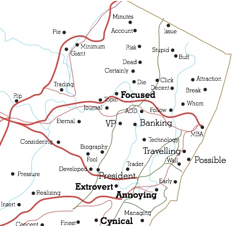
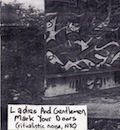
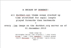
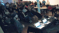

people doing strange things with electricity
The 37.8.4-th dorkbot-nyc meeting and 10th ANNIVERSARY PARTY took place from 7-10pm on Wednesday, December 1st, 2010 at Location One in SoHo.
IT WAS OUR 10TH ANNIVERSARY! YOU CAME TO HELP US CELEBRATE! THANK YOU!
And special thanks again to our long-time hosts Location One, to The Echo Nest for providing delicious pizza & beer, and to Daniel Iglesia for VJ party ambiance!
+++++++
It featured the time-traveling hijinks of:

Brian Whitman: Cut Bait
I've been making software and hardware to make music instead of actually making music for ten years and I blame dorkbot. "Scared Straight" style, I'll show you the things I presented exactly ten years ago at the very first dorkbot-nyc and then do some group therapy to try to convince at least one of you to put away the italian microcontrollers with python interpreters running Conway's Game of Creative Death and go make something beautiful that your mother will love. She misses you, you know.
http://notes.variogr.am
R. Luke DuBois: A More Perfect Union
A More Perfect Union looks at American self-identity through the medium of online dating services and the metaphor of the decenniel U.S. Census. Using data from over twenty online dating sites, the work is organized according to the same heuristics as the U.S. Census, sorting online dating profiles by Congressional District and subjecting the imagery and text to statistical analysis. Online dating forces us to engage in a vulnerable act of articulating our self-identity in a semi-public forum for the express purpose of being wanted, and to read a thoughtful dating profile or view a profile photo is to view the precarious expression of someone else's desires. The work contains several parts, which will be presented along with some ten-year-old software called Jitter, or something.
http://lukedubois.com

Tali Hinkis and Kyle Lapidus: LoVid
Before there was LoVid there was Viduo and before that there was Ladies and Gentlemen, Mark Your Doors. It's been so long we forgot how to get to The Lazy I (Tali even forgot what and where The Lazy I is). But we still have the wood Penguin from Clyde Jones who predicted the birth of our children. In honor of the occasion, we'll mix the VHS tape we showed at our first dorkbot with some other time-capsule faves (if we can find another VHS deck????) We'll also VJ requests if you bring them on VHS, so let's get busy home-video0.2 style.
http://lovid.org
+++++++
|
Here's the 10th Anniversary dorkbot video Douglas showed at the beginning of the meeting! |
|
 all dorkbot-nyc theme songs stacked up time stretched for equal length played forwards then backwards + every .jpg image on the dorkbot.org server as of 01.december.2010 |
| +++++++ |
|
And here's a timelapse video of the party by Chris Jordan! |
|  |
+++++++
Douglas's pics from the meeting
Roberto Tobar's pics from the meeting
+++++++
Next meeting: 05 Jan 2011